robotics – Robotics and drive bases¶
Robotics module for the Pybricks API.
| ✅ | ✅ | ✅ | ✅ | ✅ | ✅ |
|---|
- class DriveBase(left_motor, right_motor, wheel_diameter, axle_track)¶
A robotic vehicle with two powered wheels and an optional support wheel or caster.
By specifying the dimensions of your robot, this class makes it easy to drive a given distance in millimeters or turn by a given number of degrees.
Positive distances, radii, or drive speeds mean driving forward. Negative means backward.
Positive angles and turn rates mean turning right. Negative means left. So when viewed from the top, positive means clockwise and negative means counterclockwise.
See the measuring section for tips to measure and adjust the diameter and axle track values.
- Parameters:
Driving by a given distance or angle
Use the following commands to drive a given distance, or turn by a given angle.
This is measured using the internal rotation sensors. Because wheels may slip while moving, the traveled distance and angle are only estimates.
- awaitstraight(distance, then=Stop.HOLD, wait=True)¶
Drives straight for a given distance and then stops.
- awaitcurve(radius, angle, then=Stop.HOLD, wait=True)¶
Drives an arc along a circle of a given radius, by a given angle.

- settings(straight_speed, straight_acceleration, turn_rate, turn_acceleration)¶
- settings() Tuple[int, int, int, int]
Configures the drive base speed and acceleration.
If you give no arguments, this returns the current values as a tuple.
The initial values are automatically configured based on your wheel diameter and axle track. They are selected such that your robot drives at about 40% of its maximum speed.
The speed values given here do not apply to the
drive()method, since you provide your own speed values as arguments in that method.- Parameters:
straight_speed (Number, mm/s) – Straight-line speed of the robot.
straight_acceleration (Number, mm/s²) – Straight-line acceleration and deceleration of the robot. Provide a tuple with two values to set acceleration and deceleration separately.
turn_rate (Number, deg/s) – Turn rate of the robot.
turn_acceleration (Number, deg/s²) – Angular acceleration and deceleration of the robot. Provide a tuple with two values to set acceleration and deceleration separately.
- done() bool¶
Checks if an ongoing command or maneuver is done.
- Returns:
Trueif the command is done,Falseif not.
Drive forever
Use
drive()to begin driving at a desired speed and steering.It keeps going until you use
stop()or change course by usingdrive()again. For example, you can drive until a sensor is triggered and then stop or turn around.- drive(speed, turn_rate)¶
Starts driving at the specified speed and turn rate. Both values are measured at the center point between the wheels of the robot.
- stop()¶
Stops the robot by letting the motors spin freely.
- brake()¶
Stops the robot by passively braking the motors.
Measuring
- distance() int: mm¶
Gets the estimated driven distance.
- Returns:
Driven distance since last reset.
- angle() int: deg¶
Gets the estimated rotation angle of the drive base.
- Returns:
Accumulated angle since last reset.
- state() Tuple[int, int, int, int]¶
Gets the state of the robot.
- Returns:
Tuple of distance, drive speed, angle, and turn rate of the robot.
- reset()¶
Resets the estimated driven distance and angle to 0.
- stalled() bool¶
Checks if the drive base is currently stalled.
It is stalled when it cannot reach the target speed or position, even with the maximum actuation signal.
- Returns:
Trueif the drivebase is stalled,Falseif not.
❌ ❌ ✅ ✅ ✅ ✅ Driving with the gyro
- use_gyro(use_gyro)¶
Choose
Trueto use the gyro sensor for turning and driving straight. ChooseFalseto rely only on the motor’s built-in rotation sensors.- Parameters:
use_gyro (bool) –
Trueto enable,Falseto disable.
If your hub is not mounted flat in your robot, make sure to specify the
top_sideandfront_sideparameters when you initialize thePrimeHub(),InventorHub(),EssentialHub(), orTechnicHub(). This way your robot knows which rotation to measure when turning.The gyro in each hub is a bit different, which can cause it to be a few degrees off for big turns, or many small turns in the same direction. For example, you may need to use
turn(357)orturn(362)on your robot to make a full turn.By default, this class tries to maintain the robot’s position after a move completes. This means the wheels will spin if you pick the robot up, in an effort to maintain its heading angle. To avoid this, you can choose
then=Stop.COASTin your laststraight,turn, orcurvecommand.Measuring and validating the robot dimensions
As a first estimate, you can measure the
wheel_diameterand theaxle_trackwith a ruler. Because it is hard to see where the wheels effectively touch the ground, you can estimate theaxle_trackas the distance between the midpoint of the wheels.If you don’t have a ruler, you can use a LEGO beam to measure. The center-to-center distance of the holes is 8 mm. For some tyres, the diameter is printed on the side. For example, 62.4 x 20 means that the diameter is 62.4mm and that the width is 20 mm.
In practice, most wheels compress slightly under the weight of your robot. To verify, make your robot drive 1000 mm using
my_robot.straight(1000)and measure how far it really traveled. Compensate as follows:If your robot drives not far enough, decrease the
wheel_diametervalue slightly.If your robot drives too far, increase the
wheel_diametervalue slightly.
Motor shafts and axles bend slightly under the load of the robot, causing the ground contact point of the wheels to be closer to the midpoint of your robot. To verify, make your robot turn 360 degrees using
my_robot.turn(360)and check that it is back in the same place:If your robot turns not far enough, increase the
axle_trackvalue slightly.If your robot turns too far, decrease the
axle_trackvalue slightly.
When making these adjustments, always adjust the
wheel_diameterfirst, as done above. Be sure to test both turning and driving straight after you are done.Using the DriveBase motors individually
After creating a
DriveBaseobject, you can still use its two motors individually. If you start one motor, the other motor will automatically stop. Likewise, if a motor is already running and you make the drive base move, the original maneuver is cancelled and the drive base will take over.Advanced settings
The
settings()method is used to adjust commonly used settings like the default speed and acceleration for straight maneuvers and turns. Use the following attributes to adjust more advanced control settings.- distance_control¶
The traveled distance and drive speed are controlled by a PID controller. You can use this attribute to change its settings. See the motor control attribute for an overview of available methods. The
distance_controlattribute has the same functionality, but the settings apply to every millimeter driven by the drive base, instead of degrees turned by one motor.
- heading_control¶
The robot turn angle and turn rate are controlled by a PID controller. You can use this attribute to change its settings. See the motor control attribute for an overview of available methods. The
heading_controlattribute has the same functionality, but the settings apply to every degree of rotation of the whole drive base (viewed from the top) instead of degrees turned by one motor.
| ❌ | ✅ | ✅ | ✅ | ✅ | ✅ |
|---|
- class Car(steering_motor, drive_motors)¶
A vehicle with one steering motor, and one or more motors for driving.
When you use this class, the steering motor will automatically find the center position. This also determines which angle corresponds to 100% steering.
- Parameters:
- steer(percentage)¶
Steers the front wheels by a given amount. For 100% steering, it steers right by the angle that was determined on initialization. For -100% steering, it steers left and 0% means straight.
- Parameters:
steering (Number, %) – Amount to steer the front wheels.
- drive_power(power)¶
Drives the car at a given “power” level, as a percentage of the battery voltage. Positive values drive forward, negative values drive backward.
For
powervalues below 30%, the car will coast the wheels in order to roll out smoothly instead of braking abruptly.This command is useful for remote control applications where you want instant response to button presses or joystick movements.
- Parameters:
speed (Number, %) – Speed of the car.
- drive_speed(speed)¶
Drives the car at a given motor speed. Positive values drive forward, negative values drive backward.
This command is useful for more precise driving with gentle acceleration and deceleration. This automatically increases the power to maintain speed as you drive across obstacles.
- Parameters:
speed (Number, deg/s) – Angular velocity of the drive motors.
Examples¶
Driving straight and turning in place with a drive base¶
This program shows the basics of driving and turning.
from pybricks.pupdevices import Motor
from pybricks.parameters import Port, Direction
from pybricks.robotics import DriveBase
# Initialize both motors. In this example, the motor on the
# left must turn counterclockwise to make the robot go forward.
left_motor = Motor(Port.A, Direction.COUNTERCLOCKWISE)
right_motor = Motor(Port.B)
# Initialize the drive base. In this example, the wheel diameter is 56mm.
# The distance between the two wheel-ground contact points is 112mm.
drive_base = DriveBase(left_motor, right_motor, wheel_diameter=56, axle_track=112)
# Optionally, uncomment the line below to use the gyro for improved accuracy.
# drive_base.use_gyro(True)
# Drive forward by 500mm (half a meter).
drive_base.straight(500)
# Turn around clockwise by 180 degrees.
drive_base.turn(180)
# Drive forward again to get back to the start.
drive_base.straight(500)
# Turn around counterclockwise.
drive_base.turn(-180)
Remote controlling a car with front wheel steering¶
This program shows how you can drive a car with front wheel steering
using the remote control.
In this program, the ports match those of the LEGO Technic 42099 Off-Roader, but you can use any other car with front wheel steering. If your vehicle has only one drive motor, you can use a single motor instead of a tuple of the motors used below.
from pybricks.parameters import Direction, Port, Button
from pybricks.pupdevices import Motor, Remote
from pybricks.robotics import Car
from pybricks.tools import wait
# Set up motors.
front = Motor(Port.A, Direction.COUNTERCLOCKWISE)
rear = Motor(Port.B, Direction.COUNTERCLOCKWISE)
steer = Motor(Port.C, Direction.CLOCKWISE)
# Connect to the remote.
remote = Remote()
# Set up the car.
car = Car(steer, [front, rear])
# The main program starts here.
while True:
# Read remote state.
pressed = remote.buttons.pressed()
# Steer using the left pad. Steering is the percentage
# of the angle determined while initializing.
steering = 0
if Button.LEFT_PLUS in pressed:
steering += 100
elif Button.LEFT_MINUS in pressed:
steering -= 100
car.steer(steering)
# Drive using the right pad.
power = 0
if Button.RIGHT_PLUS in pressed:
power += 100
elif Button.RIGHT_MINUS in pressed:
power -= 100
car.drive_power(power)
# Wait briefly.
wait(10)